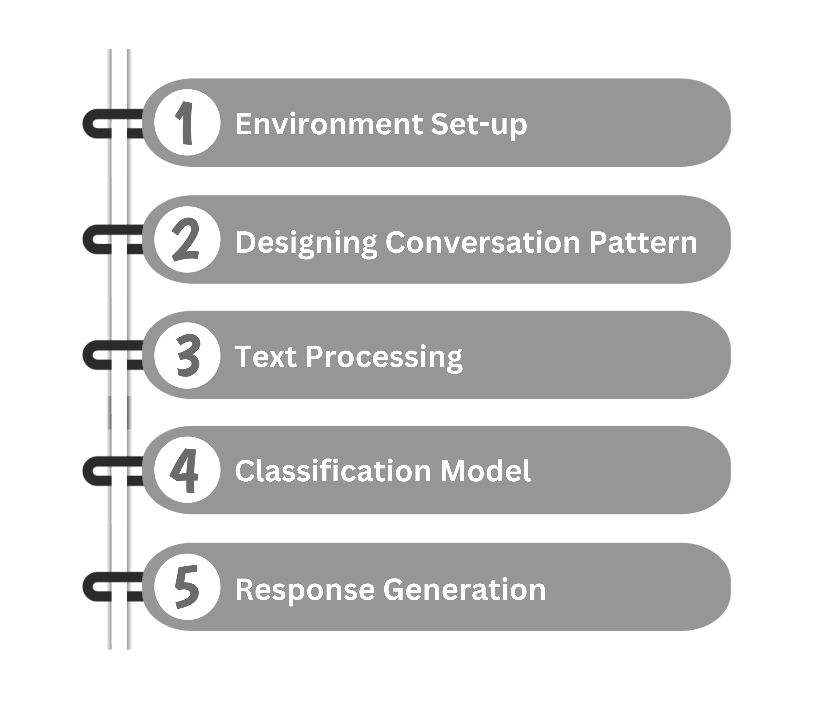

Creating a chatbot involves understanding and processing human language, which can be achieved through Natural Language Processing (NLP). Python’s NLTK library is a powerful tool for NLP that provides easy-to-use interfaces to over 50 corpora and lexical resources.
Step-by-Step Guide:

Environment Setup:
- Python installation: Ensure you have Python installed on your system. Python 3.x versions are recommended.
- NLTK Installation: Install the NLTK package using pip:
pip install nltk
- Data Sets and Tokenizers: Download necessary NLTK data sets and tokenizers which are essential for processing natural language:
Python Codeimport nltk nltk.download('popular') Designing Conversaiton Patters:
- Patterns and Intents: Define a dictionary with various intents such as ‘greetings’, ‘goodbyes’, and ‘faq’. Each intent contains a list of possible patterns and responses:
Python CodeCONVERSATION_PATTERNS = { "greetings": { "patterns": ["hello", "hi", "hey"], "responses": ["Hello!", "Hi there!", "Hey!"] }, "goodbyes": { "patterns": ["bye", "goodbye", "see you"], "responses": ["Goodbye!", "See you later!", "Bye!"] }, // Add more intents as needed } Text Processing:
- Tokenization: Split the text into individual words or tokens.
- Stemming and Lemmatization: Reduce words to their root form to understand the general meaning without tense or plurality.
Python Codefrom nltk.stem import WordNetLemmatizer lemmatizer = WordNetLemmatizer() def process_input(input_text): tokens = nltk.word_tokenize(input_text) lemmas = [lemmatizer.lemmatize(token.lower()) for token in tokens] return lemmas Classification Model:
- Training Data Preparation: Prepare the dta for training by associating each pattern with its corresponding intent.
- Model Training: Use a classification algorithm like Naive Bayes to train the model on the prepared data.
Python Code
from nltk import NaiveBayesClassifier def train_classifier(patterns): training_data = [] for intent, data in patterns.items(): for pattern in data['patterns']: tokens = process_input(pattern) training_data.append((tokens, intent)) classifier = NaiveBayesClassifier.train(training_data) return classifier Response Generation:
- Response Selection: Based on the classified intent, select an appropriate response from the predefined list.
- Chatbot Functionality: Implement the chatbot functionality that takes user input, processes it, classifies it, and then generates a response.
Python Code
import random def generate_response(classifier, user_input): category = classifier.classify(process_input(user_input)) if category in CONVERSATION_PATTERNS: return random.choice(CONVERSATION_PATTERNS[category]['responses']) else: return "I'm not sure how to respond to that." // Example usage: classifier = train_classifier(CONVERSATION_PATTERNS) user_input = "hello" print(generate_response(classifier, user_input))
Integrating Web Scraping:
With your interest in web scraping and HTML parsing, you can enhance your chatbot by integrating real-time data extraction. For instance, you could use BeautifulSoup to scrape news headlines or weather information and provide it as part of the chatbot’s responses.
Conclusion:
Building a chatbot with NLTK is an enriching experience that hones your skills in NLP. It lays the groundwork for more complex AI projects and opens up possibilities for integrating various functionalities like web scraping.